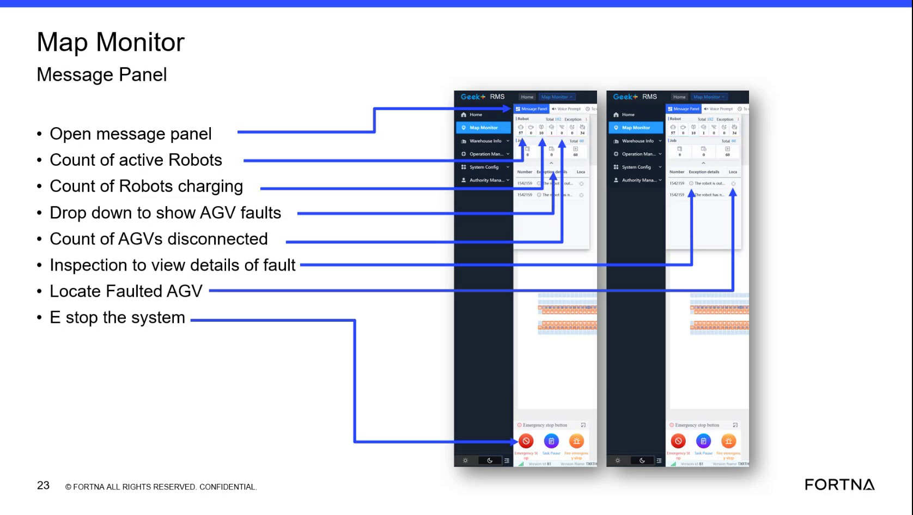

| Procedure ID | proc_open_rms_agv_fault_dropdown_v1 |
|---|---|
| Title | Open RMS AGV fault drop-down to view current faults/errors |
| Procedure Type | diagnostic |
| Primary Role | L1_support |
| Support Safe | Yes |
| Capability Tags | agv_active_errors |
| Access Surface | rms_ui |
| Audience Roles | L1_support |
| Failure Pattern Tags | None |
| Validation Status | needs_sme_review |
| Merge Status | source_finalized |
Use the small drop-down in the RMS / fleet status UI map monitor summary area to reveal current AGV fault/error items that need attention when the drop-down is hidden or collapsed.
When you need to view the current AGV faults/errors list from the RMS map monitor summary area and the drop-down is hidden/collapsed.

Responsible role: L1_support
Instruction:
Open the RMS / fleet status UI (rms_ui) and navigate to the map monitor summary area that contains the Map Monitor Message Panel metrics and the small drop-down for AGV faults.
Expected result:
The RMS map monitor summary area is visible, including the small drop-down control associated with showing AGV faults.
Responsible role: L1_support
Instruction:
Check whether the AGV faults drop-down is visible. If it is hidden/collapsed, locate the drop-down control in the summary area and click it to expand.
Expected result:
The AGV faults drop-down expands and displays the current fault/error items list.
Responsible role: L1_support
Instruction:
With the AGV faults drop-down expanded, read the list of current fault/error items shown in the drop-down.
Expected result:
The expanded drop-down shows a list of current fault/error items that need attention.
Stop or Escalate If:
Responsible role: L1_support
Instruction:
If the expanded drop-down shows faults that require deeper investigation and you cannot identify the affected AGV(s) or fault details from the drop-down list, stop and escalate.
Expected result:
You escalate rather than guessing when the drop-down list alone cannot identify the affected AGV(s) or provide sufficient fault details.
Stop or Escalate If: